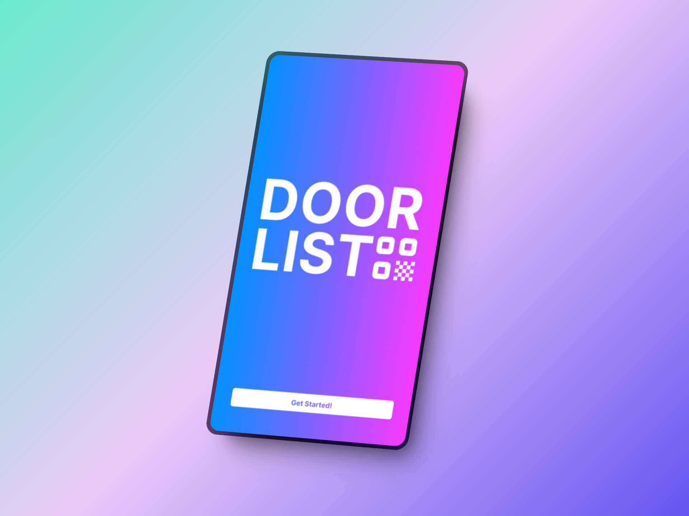
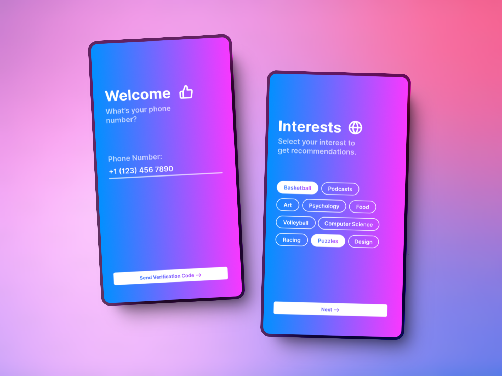

I. Introduction
DoorList is a social media app designed for college students to engage in groups, chat with friends, and attend events. It is a published app on the Apple App Store and Google Play Store with over 10,000 registered users. I was brought in as a UX designer and prototyper, in a larger design team, to focus on improving three things:
1. The onboarding process
2. The explore and groups page
3. Engagement with in-app group features
Collaboration was very important in this project. My colleagues focused more on user research and synthesis, and I worked closely with them to discuss their insights and implement their ideas.
I used Figma to design lo-fi, mid-fi, and hi-fi wireframes, and to create the final prototype. For the research phase, we utilized design thinking to analyze user pain points and find potential solutions. During the design phase, we focused on agile development due to our client’s fast-moving product and changing desires. We held a constant dialogue within the team and with the clients to effectively address issues and meet milestones efficiently.
In the end, we made a complete redesign of the onboarding process to make it faster, simpler, and more tailored to user preferences. We modified the explore and groups page layouts to highlight the group features and encourage social interaction. Finally, we designed a passport feature with badges to incentive user engagement with the group features within the app.
II. Research & Ideation
After initial exploration, we quickly defined a few research focus areas:
• Feature Enhancements: Changing the explore and groups page to ensure accessibility and usability
• Redundant and Complicated Features: Remove repetitive or unnecessary elements like the dashboard, streamline search tabs, and ensure all features serve a clear purpose
• Group Dynamics: Improve the visibility of group features to attract interest
Our target audience was college students–specifically students looking to join or already in social groups. With this, we decided to conduct user surveys, asking current users of the app what improvements they would like to see. The main insights we gathered from responses were:
• It is hard to find events to attend within the app
• Groups don’t seem to serve much purpose
Next, we looked at a few market competitors, and analyzed their strengths and weaknesses. This helped us gain initial ideas for what works and what doesn’t.
• Flare: Mainly greek life college students, similar groups and photo sharing features
• Poppin: Mainly for college parties, similar color theme and style
• Partiful: Mainly for parties, stamps system
After that, we developed user personas to try and fully understand the desires and frustrations of potential users of the app.

3 User Personas we made.
The next stage was ideation. We got together and spent a fair amount of time brainstorming, discussing, and working through potential ideas to solve the issues identified during the research.
Friends
• See the events your friends are going to
• See what groups friends are in
Photo Sharing
• Use photo sharing as a way for groups to “create an image”
• Feature on public group page
Explore Page
• Be able to search groups, events, and users
• Filter for event/group categories
• Personalized group and event recommendations
Groups
• Make the landing page more enticing
• Have public and private groups to populate the app
Passport
• Fits overall social theme
• Keep track of events you went to or hosted within the app
• Creates competition within the app to engage users
III. Wireframes
First, I started with low fidelity wireframes of the onboarding pages.

Lo-fi wireframes of the onboarding pages.
One key element of this design is to get the minimum amount of basic details from the user to make the process as easy and simple as possible. Another important aspect is giving initial recommendations of groups to join, because based on our research, we wanted users to join more groups.
Next, I made a lo-fi wireframe for an initial concept of an explore page.

Lo-fi wireframe of an explore page.
From the research, we wanted to allow users to easily search for, filter through, and discover groups on this page, which is illustrated in this simple concept with a clear search bar, filter button, and list of groups to explore.
Finally, I created lo-fi wireframes for the new groups page.

Lo-fi wireframes of the groups page.
We wanted to highlight group photos more prominently on the groups page, and to overall simplify it to make the important information easier to find.
The main takeaways we got from these wireframes were:
• The explore page should have more content and features on it to increase engagement
• Customizing the app based on user interests is important
• Because it is a social app, the main focus is always on people themselves
After this, I made a batch of mid fidelity wireframes for the same concepts, taking into account our lo-fi insights.
Onboarding pages:
Mid-fi wireframes of the onboarding pages.
I added a new page where the user can select specific interest categories, which will then later get recommended to them on the explore page in the form of groups and events to join.
Explore page:

Mid-fi wireframe of the explore page.
I created a more extensive layout for this page, breaking it up into 5 main sections: the search bar, recommended events, recommended groups, trending events, and recommended friends. This provides much more interactable content and makes use of the in-app features.
Group page:
Mid-fi wireframes of the group page.
This version prominently features photos at the top of the page, emphasizing the social aspect of the app.
What we learned from this mid-fi process was:
• We wanted an additional feature to make users more incentivized to use the app for events
• Filters were not feasible because, in this stage of the app, there are not enough public events for filters to be effective
• The people/recommended friends should be at the top of the explore page instead of the bottom, because they are the most important
• Images on the groups page is important, especially near the top
IV. Final Prototype
We combined all of these ideas, insights, and feedback to make the final, high-fidelity prototype.

Logo page.

Onboarding pages.

Explore page.
Passport pages.

Group page.
Some key parts of these final designs:
• I made the color theme on the initial onboarding process more vibrant in order to have a good first impression for users
• On the explore page, we moved the users section to the top to highlight the importance of connecting with other individuals
• Added friend-recommended content to the explore page, which is effective in convincing users to join
• For the groups page, we added a full photo banner at the top, along with the group profile picture and basic information
• Made the groups page more organized and streamlined
• For the passport, we added colorful badges that serve as achievements based on how many events you have attended and hosted within the app
• It also shows friends’ passports on the same page, creating a competition within the app motivating users to engage more
V. Outcomes
Our project achieved the three goals initially set by our team and the client. We made the onboarding process easier and faster for users. The new explore and groups page use in-app features more effectively, provide recommendations, and highlight social aspects of the app. The passport design creates an incentive for users to engage with group and event features within the app.
I learned a lot about flexibility in this project. We had numerous ideas and concepts throughout the process, and we ended up pivoting away from some of them to incorporate better ideas. It forced me and my team to be continually flexible and agile, in constant communication with each other and prepared to make significant changes at any point of the project. This was a valuable opportunity to improve my wireframing, design, prototyping, and collaboration skills.